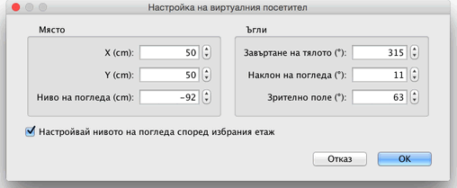
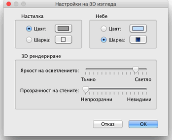

| Настройки на 3D изгледа | |||
|
Изберете 3D изглед > Изглед отгоре или 3D изглед > Виртуална разходка за да смените гледната точка в 3D изгледа.
Когато е избрано Изглед отгоре, 3D
изгледа изобразява Вашия план триизмерно, гледано отгоре. В този режим,
местенето на мишката наляво или надясно с натиснат ляв бутон завърта
изображението около вертикална ос, минаваща през центъра на плана;
местенето на мишката нагоре или надолу с натиснат ляв бутон завърта
плана около хоризонталната му ос; въртенето на скрол колелцето на
мишката уголемява или смалява 3D изгледа.
Когато е избрано Виртуална разходка, виртуалният посетител, гледан отгоре, също се изобразява в плана. Неговото място и завъртане се променя едновременно в плана и в 3D изгледа. Около виртуалния посетител има четири индикатора.
|


|
|
Когато е над някое от рамената на посетителя или зад
него, показалецът на мишката се променя за да Ви покаже, че ако
натиснете левия бутон на мишката в тази точка и я движите, ще местите
погледа на посетителя по хоризонтала или по вертикала, или ще променяте
височината на неговата гледна точка.  В този прозорец можете да променяте също и хоризонталния ъгъл (зрително поле), видим от посетителя и да задавате дали пълното повдигане нивото на погледа му да зависи от текущо избрания етаж, като с това виртуалният посетител ще може да се изкачва и слиза на избрания от Вас етаж. И накрая, менюто 3D изглед > Настройка на 3D изгледа... изобразява панел, в който можете да променяте цвета или шарката на настилката и небето в 3D изгледа, осветеността, прозрачността на стените (и подовете).  |
|